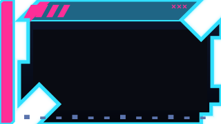
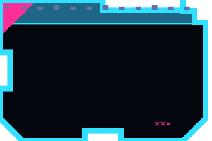

// FOR WRITERS WHO NEED TO ORGANIZE
Plot every
thread_
Your timeline, outline, characters and places, organized in one workspace and connected to each other, from the first idea to the finished book.
// 01 — WHY BUNPLOT
Your story is everywhere
Character notes in one doc. The timeline in a spreadsheet. Places in your head. Chapter plans on sticky notes.
BunPlot puts it all in one place and links it together: every event knows its chapter, who is in it and where it happens.
// 02 — FEATURES
Everything in its place
TIMELINE + OUTLINE
See the plot, then write it
Lay out events by chapter and storyline on the timeline grid, then draft in an outline editor with real book fonts and images that wrap around your text.
- › Grid and flow views
- › Filter by character, place or storyline
- › Edits backed up as you type

CHARACTERS + PLACES
Know who everyone is to everyone
Give each character a color, a role and notes, and map how they're related on family tree canvases. Keep every place with its cover image and description.
- › Relationship maps and family trees
- › Places with cover images
- › Linked to every event they appear in
Ilsa Varn
PROTAGONIST
RELATIONSHIPS
EXPORTS
Take it with you
Export your manuscript as a book-style PDF or Word file, or a story bible with every character, place and event in one reference document. Preview it before you download.
- › Book style at A4 or 6×9
- › Story bible with a contents page
- › Storyboard as PDF or images
// ALSO IN BUNPLOT
Storyboard
Sketch panels for each chapter with a built-in drawing tool.
Search
Find any event, character, place or line across every project.
Folders and projects
Keep separate books and series apart, each with its own cover.
On your phone
Drag, rename and write on a touch screen when an idea hits.
// 03 — ABOUT
Made for people who organize
I built BunPlot because I need to see how everything in a story fits together, and I couldn't find a tool that kept it all in one place. If you organize the way I do, it's for you too. — [YOUR NAME]

// READY WHEN YOU ARE